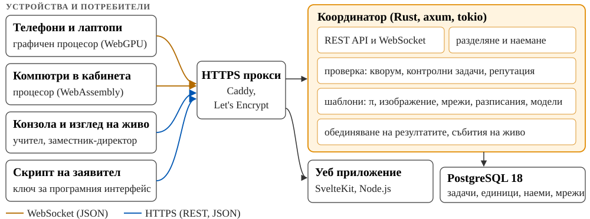
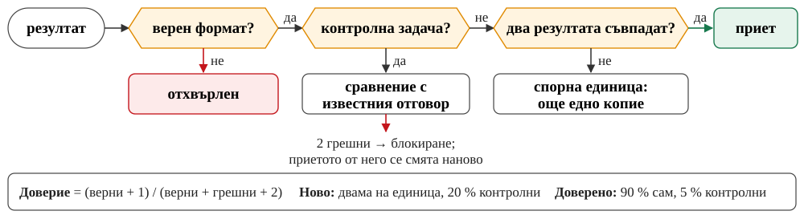
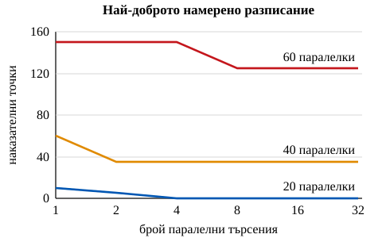
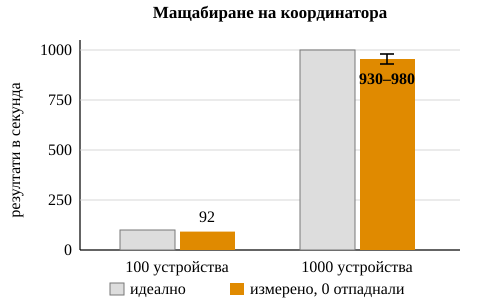
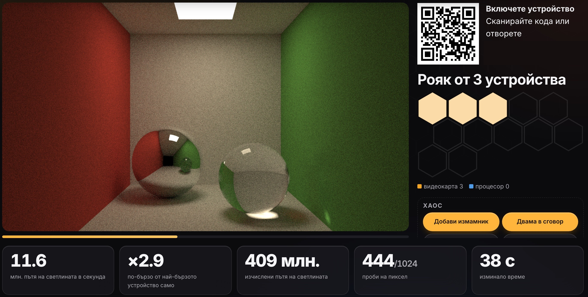
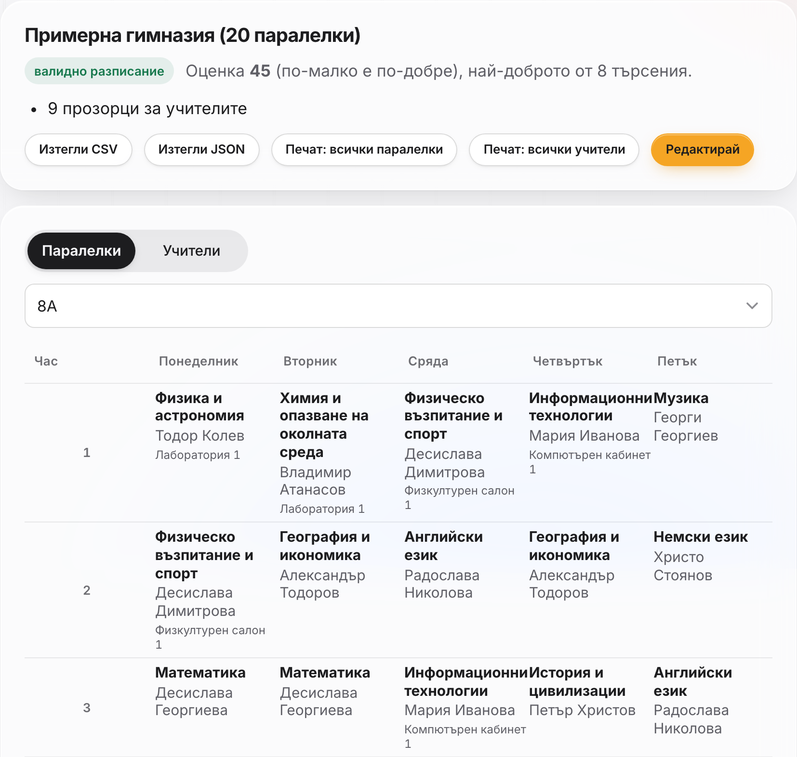
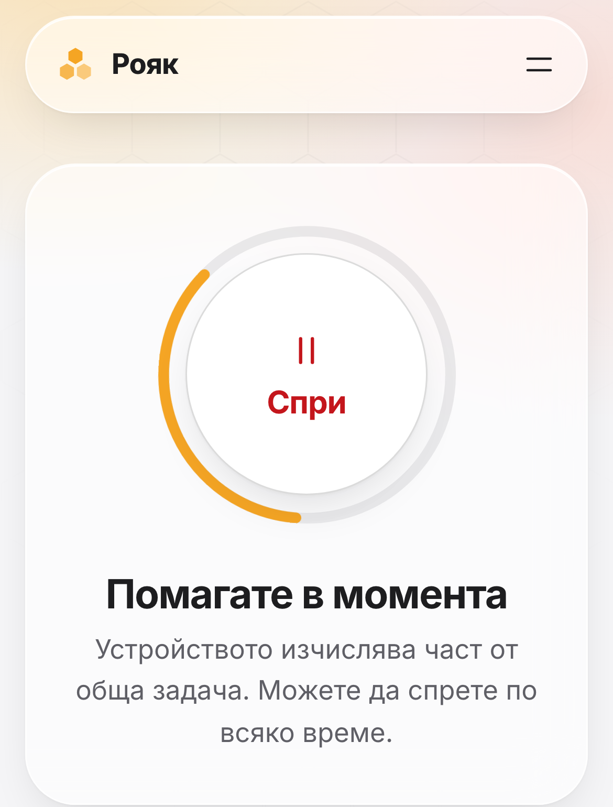

Рояк – разпределена система, която превръща неизползваните училищни компютри и личните устройства в общ изчислителен ресурс чрез уеб браузъра (WebGPU и WebAssembly). Направление: Разпределени приложения. На живо: https://swarmrelay.duckdns.org. Свободен софтуер, лиценз GPL-3.0.
[Трите имена], тел. [телефон], [имейл], [училище, населено място], [клас] клас
[Трите имена], тел. [телефон], [имейл], [длъжност]
Ученици, учители и изследователи често нямат изчислителна мощност за машинно обучение, симулации и графика: облачните услуги имат квоти или са скъпи, а националните суперкомпютри не са за училищни проекти. В същото време училищните компютри са свободни вечер, през почивните дни и във ваканциите (в нашия кабинет – около 75 % от времето, по оценка), а почти всеки ученик носи телефон с графичен процесор.
Целта е система, в която всяко устройство с модерен браузър се включва в общ „рояк“ с отваряне на връзка или сканиране на QR код – без инсталиране и без права на администратор. Устройството изпълнява безопасно части от голяма задача, а координаторът проверява всеки резултат, защото всеки може да опита да излъже. Училището получава собствена мрежа и полезна задача за нея – седмичното си разписание.
Новост: без инсталиране, на графичен процесор, с проверка на всеки резултат и собствена мрежа за всяко училище – с разписание, невронни мрежи, езикови модели и свои програми.
| Съществуващо решение | Ограничение |
|---|---|
| BOINC [1], Folding@home | инсталиране и права на администратор |
| Облачни графични процесори | заплащане или дневни квоти |
| Суперкомпютър „Дискавърър“ | достъп чрез проекти, не за ученици |
| Браузърни мрежи преди WebGPU | само процесор, без проверка на резултатите |
Роля на автора: [Име] – цялата разработка: координатор, проверка на резултатите, база данни и внедряване, изчисления в браузъра, интерфейс, тестове и документация.

Фиг. 1. Архитектура: всички устройства влизат през един защитен адрес, а опашката е таблица в базата.

Фиг. 2. Как координаторът решава дали да приеме резултат от непознато устройство.
Всяка част се смята от две устройства. На доказало се устройство (поне 20 проверени резултата) се вярва: 9 от 10 негови части се смятат само от него, а всяка десета е проверка от друго устройство. Цената на проверката е 1,20–1,26 изчисления на част вместо 2,0.
| Технология | Обосновка |
|---|---|
| Rust (axum, tokio, sqlx) | бърз и безопасен сървър; ядрата стават и WebAssembly |
| WebGPU, WGSL [5] | стандартен достъп до графичния процесор |
| WebAssembly, Web Workers | резервен път без WebGPU, на всички ядра без едно |
| PostgreSQL 18 | транзакциите правят опашката и проверката надеждни |
| SvelteKit, TypeScript | интерфейс; типовете на съобщенията идват от Rust |
| Docker, Caddy, Actions | старт с една команда, HTTPS, тестове при всяка промяна |
Алгоритми: метод Монте Карло (π); проследяване на лъчи [4]; обучение на невронни мрежи с цели числа (MNIST) и търсене на параметри; седмично разписание със закъсняло приемане (late acceptance hill climbing) [3]; езиков модел SmolLM2-360M (ONNX Runtime Web, WebGPU); кворум и контролни задачи [2], репутация като средна стойност на бета разпределение.
Програмен интерфейс. Задачите се пускат и от скрипт: ключ на мрежата в Authorization: Bearer дава права на администратор само в нея; устройствата ползват WebSocket, останалото е REST с JSON.
| Заявка | Достъп |
|---|---|
POST /api/auth/login – вход (бисквитка) | всеки |
POST /api/networks/{id}/keys – ключ за скрипт | админ |
POST /api/networks/{id}/jobs – пуска задача | админ, ключ |
GET /api/networks/{id}/jobs/{job} – резултат | наблюдател |
POST /api/networks/{id}/jobs/{job}/cancel – спира | админ, ключ |
Тестване: 291 теста на Rust, Vitest и Playwright (Chromium с и без WebGPU, Firefox, WebKit) при всяка промяна.
| Област | Какво се доказва |
|---|---|
| Ядра и шаблони | равни на независимо изчислени еталони |
| Проверка | измамникът е хванат, работата му – преизчислена |
| Мрежи и роли | роли на всеки маршрут, изолация между мрежите |
| Разписания | фалшиво разписание се отхвърля |
| Езикови модели | грешно смятащо устройство не получава единици |
| Браузър (Playwright) | включване, изобразяване, хаос, прекъсване |
Измерени резултати (методът е в docs/measurements.md):
| Изпитване | Резултат |
|---|---|
| 13 компютъра в кабинета | 1920×1080 за 70 s; 107 млрд. проби за π за 43 s |
| Обучение на невронна мрежа | 240 обучения за 112 s, точност 93,7 % |
| Nothing Phone (1) | 800 млн. проби за π/s, еднакво 10,6 минути |
| MacBook Pro, Apple M1 Max | 7,4 млрд. проби за π/s в WebKit |
| 1000 симулирани устройства | ≈1000 резултата/s, нито едно отпаднало |
| Измамник; двама в сговор | блокиран за 3,1–3,4 s; сговорът – за ≈70 s |
| Езиков модел SmolLM2-360M | 50 въпроса за ≈24 s; 30 от 30 съвпадат |


Фиг. 3. Повече паралелни търсения дават по-добро разписание; 1000 устройства се обслужват почти без загуба.
Литература: [1] D. P. Anderson, BOINC, GRID 2004; [2] L. F. G. Sarmenta, Sabotage-Tolerance Mechanisms for Volunteer Computing Systems, FGCS 2002; [3] E. K. Burke, Y. Bykov, The Late Acceptance Hill-Climbing Heuristic, EJOR 2017; [4] J. T. Kajiya, The Rendering Equation, SIGGRAPH 1986; [5] W3C, WebGPU, w3.org/TR/webgpu.
Доброволец (без профил): сканира QR кода или отваря връзката и натиска „Включи се“. Избира мощност от 25 до 100 % (по подразбиране 75 %) и спира с един бутон. Изчисленията спират сами при скрит раздел или батерия под 30 %. На телефон страницата се добавя на началния екран и се отваря като приложение.
Училище (собственик или администратор): създава мрежа („Кабинет 12“), задава правила (одобрение на устройствата, работно време, най-висока мощност) и показва QR кода. В „Задачи“ пуска изображение, обучение на невронни мрежи, разписание, запитвания към езиков модел или собствена програма и следи изгледа на живо (фиг. 4). Ако на линия има само едно устройство, конзолата казва, че частите чакат втора проверка, а собственикът може да избере проверка с един резултат или да приеме чакащите (публичната мрежа няма такъв бутон).
Заместник-директор: в „Училища“ внася учебния план от таблица (CSV), въвежда учители, паралелки, стаи и отсъствия; системата проверява данните преди търсене. Устройствата търсят разписанието паралелно; то се разглежда по паралелки и учители, часовете се местят ръчно с предварително показана цена на промяната и се печата (фиг. 4).



Фиг. 4. Изглед на живо (3 устройства, ×2,9); разписание; телефон, който изчислява.
Стартиране и поддръжка. Потребителите не инсталират нищо. Сървърът се стартира с една команда (just stack) на машина с Docker и има нужда от HTTPS адрес; just deploy обновява работещия сървър.
Тестови профили – вход на swarmrelay.duckdns.org/login, мрежа „Защита“:
| Роля | Може | Имейл | Парола |
|---|---|---|---|
| Доброволец | включва се | без профил: /join/КОД | |
| Платформа: админ | покани | [имейл] | [парола] |
| Мрежа: собственик | всичко | [имейл] | [парола] |
| Мрежа: админ | задачи | [имейл] | [парола] |
| Мрежа: наблюдател | гледа | [имейл] | [парола] |
Основният резултат е работещ прототип на публичен адрес: устройства без инсталиране изчисляват части от обща задача, резултатите им се проверяват, а измамниците се откриват и блокират. Приложения до момента: изпитване в училищен кабинет (13 компютъра, 4 ноември 2026 г.) и с 1000 симулирани устройства; училищните разписания са първото практическо приложение, но данни на истинско училище още няма.
Възможности за развитие: данни на реално училище и обратна връзка от заместник-директора; разпределяне на единиците според скоростта на устройствата; подписани шаблони; вход с профил на Google или Microsoft; езиков модел на български и разпознаване на реч; измерване на енергията; английски интерфейс; няколко училища.